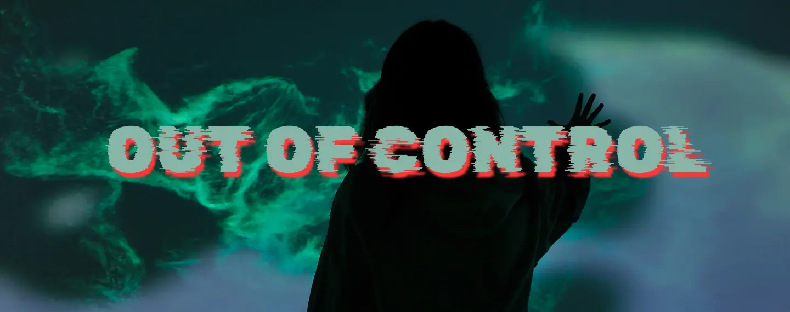
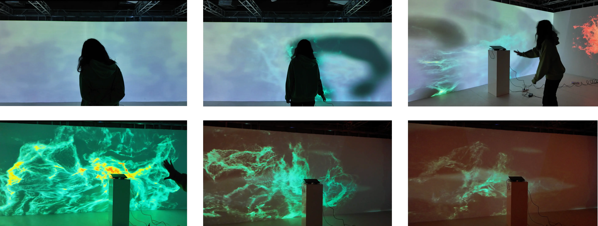

Introduction
Out of Control is an
interactive projection experience
based on
Kinect
motion capture. Users can
wipe away a frosted layer
on the projection surface to control the presentation of
thermal effects
hidden behind it. By adjusting the speed of their wiping motions, they can sense changes in emotional states, ultimately transitioning from chaos to tranquility through a blend of visual and auditory experiences. This project aims to prompt users to reflect on how anger often stems from a perception of "losing control." By focusing on the controllable aspects of the wiping action, participants discover that the focus of their emotions can be consciously shifted, leading to
reconciliation with the feeling of being out of control.
Interactive Experience

“Grasping control within the uncontrollable.”